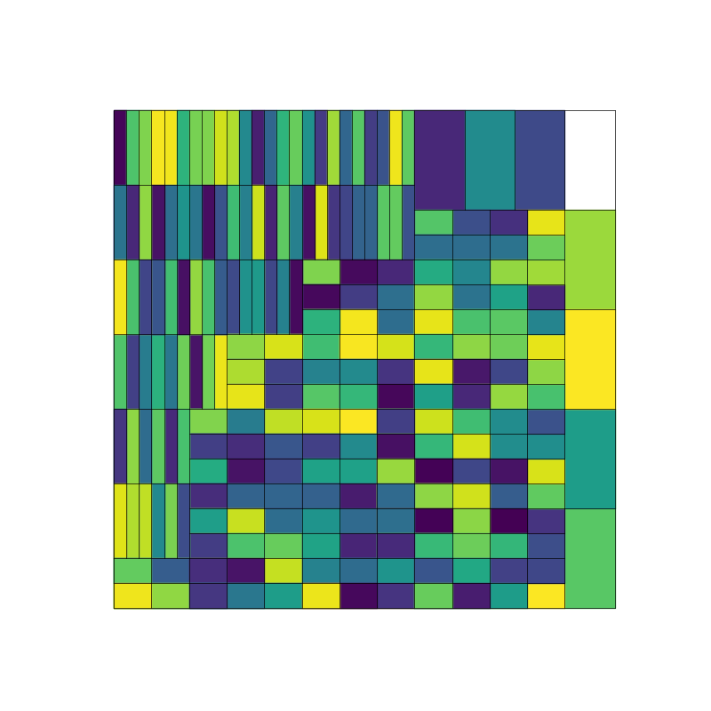
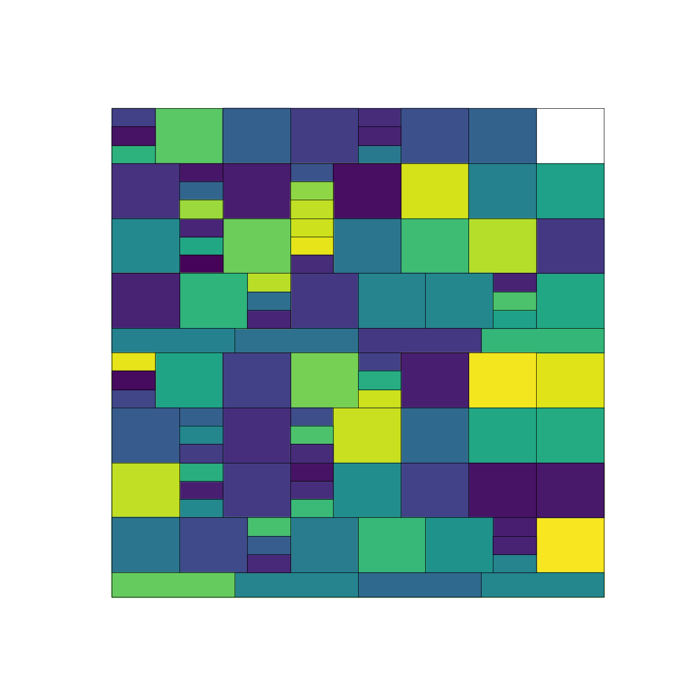
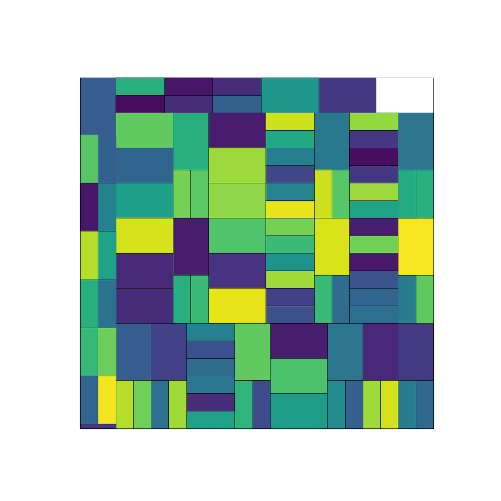
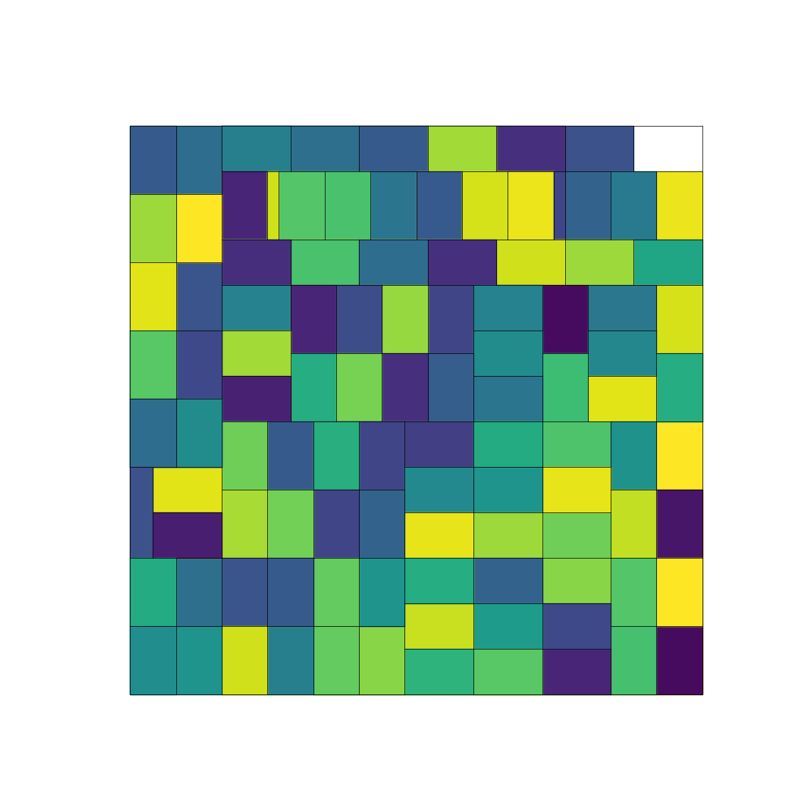

This project was inspired by a problem in my algorthms class titled "Smart Lumber". This process involved writing code to solve Smart Lumber with dynamic programming then stepping back to retrace the steps and build the solution. Finally I had to encode the solution as coordinates which would be sent to Python and graphed using matplotlib. As an additional challenge, I added a PyQt front end. This lets me easily use the scripts with a nice simple gui. A future task is to use multiple threads to fill in the DP table concurrently. This should be a marginal speed up but is good practice
The Smart Lumber problem is as follows: Given an M by N piece of wood, you can slice it as many times horizontally or vertically as you want. Every piece can be sold at a specific price given its dimensions. How much profit can you make from an m x n piece of wood?
This problem is solved efficiently using dynamic programming. The idea is to examine all the horizontal and vertical cuts then recursively calculate the price of the two pieces then check that against the price of selling without cutting. The 1x1 case is always sold. This algorithm requires a m by n dynamic programming table which can be filled up relatively quickly. Backtracking to get the actual solution is harder. To backtrack, each cell needs to keep the two cells or cuts it came from and a special zero cut to check if it was a sell case. Getting the cuts means getting the start and end points of a line segment that represent the cut and the start and end diagonals of the rectangle. This is done through a depth first search strategy, pushing to the stack as soon as a line segment is found and the computing the second corner of the square.
The solution is graphed using matplotlib. The coordinates are sent to python through a unix pipe (the program is run via a shell script). The python script reads in the points, graphs the segment and the fills in the appropriate chunk of the graph. If needed it saves the graph to the appropriate file.
This is the first project which I added a front end gui. The front end is a simple gui that has fields for width, height, file, number of images and seed.
The code will be released publicly sometime in late 2024.
Here are some select cool random artworks I made:
   